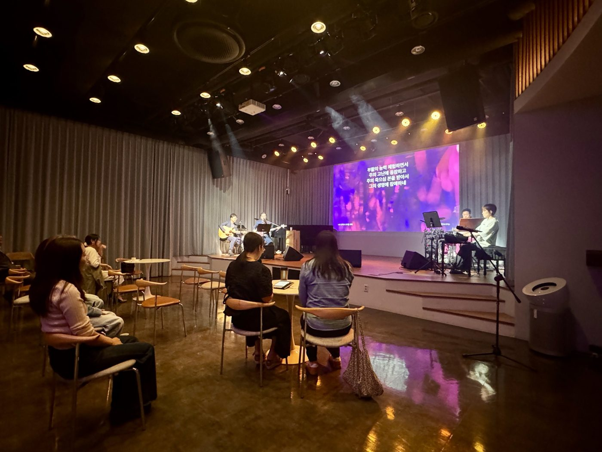
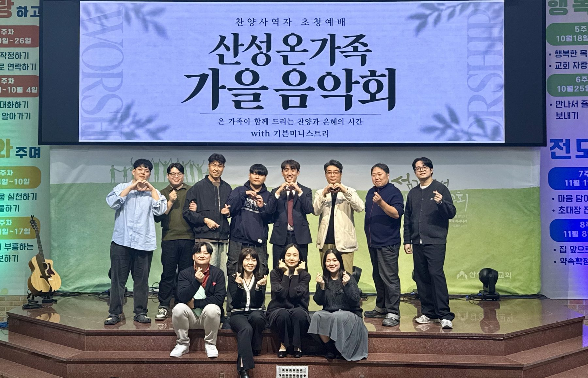
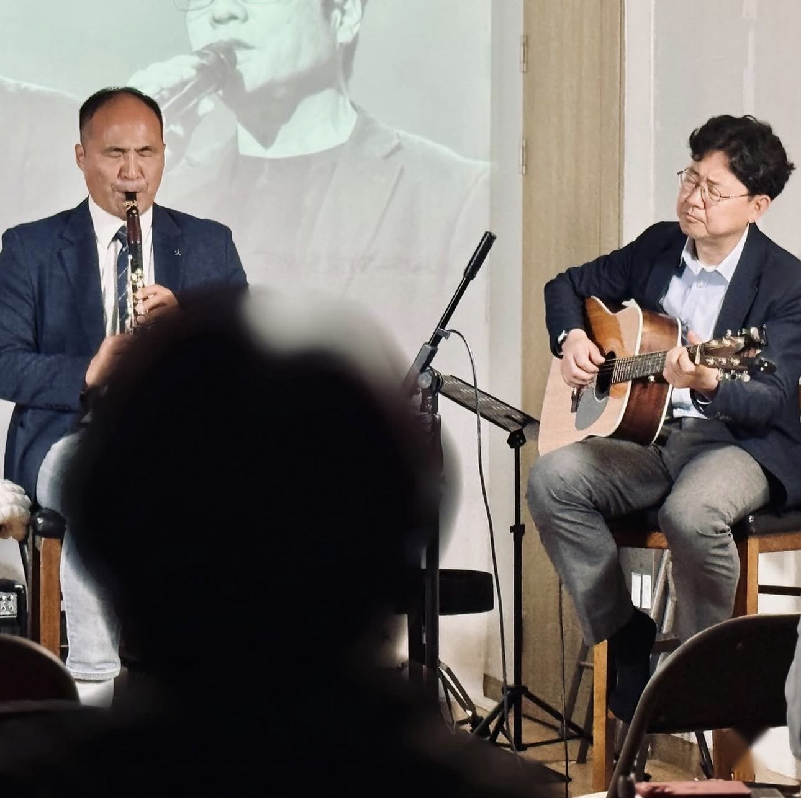
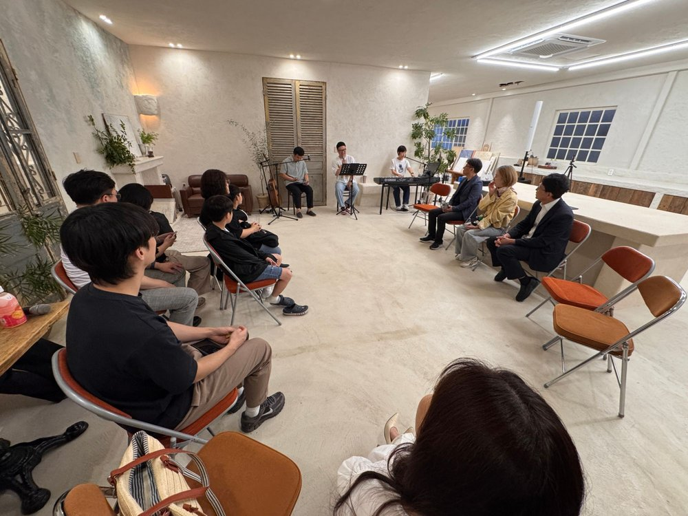

01 · WORSHIP
매월 함께 드리는 정기 예배
서울에서 시작된 찬양사역자 예배 모임 쉘위워십과 함께 중부권 예배 쉘위워십 JB를 드립니다. 누구든 함께 예배할 수 있습니다.
- 일시매월 마지막 주 금요일 저녁 7시
- 장소은혜교회 (대전 유성구 안금로 15번길 49-26)
중부권 사역자와 교회들이 함께 예배하고, 음악회를 열고,서로의 재능과 공간을 나누는 문화사역 연합입니다.

서울에서 시작된 찬양사역자 예배 모임 쉘위워십과 함께 중부권 예배 쉘위워십 JB를 드립니다. 누구든 함께 예배할 수 있습니다.

협력교회와 함께 찬양사역자와 연주자를 초청해 음악회를 열고, 지역 성도와 이웃을 초대합니다.

예배와 공연이 열리는 곳에 찬양과 연주, 음향·영상·조명으로 함께합니다.

협력교회는 예배·공연·모임 공간을 열고, 사역자들은 그 자리에서 함께 무대를 만듭니다. 혼자 하기 어려운 사역을 함께 기획하고 나눕니다.
찬양, 연주, 작곡, 음향, 영상 촬영·편집, 무대 조명
그림, 설치미술, 그래픽, 편집 디자인
예배, 공연, 전시, 모임을 위한 공간
운영 시스템, IT, 기술 지원
물질을 통한 섬김과 후원
공연 기획, 행사 연출, 프로젝트 디렉팅